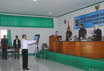
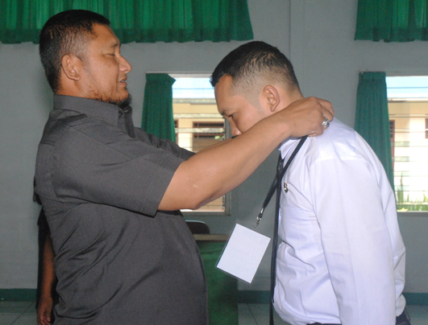

65 CPNS Pemkot Bogor Ikuti Prajabatan
19 November 2013
Sebanyak 65 Calon Pegawai Negeri Sipil (CPNS) Pemerintah Kota Bogor Golongan I dan II mengikuti Pendidikan dan Pelatihan (Diklat) Prajabatan selama 17 hari mulai tanggal 17 Nopember hingga 3 Desember 2013 di Hotel Mars 91 Cipayung kabupaten Bogor.
Diklat Prajabatan dibuka Walikota Bogor,Diani Budiarto di dampingi Kapala bidang Kepepimpinan dan Fungsional pada Badan Diklat Propinsi Jawa barat,Iman Rahman dan Kepala Bidang Diklat pada Badan Kepegawaian pendidikan dan Pelatihan (BKPP) Kota Bogor, Elly Yulia.
Walikota Bogor Diani Budiarto mengatakan diklat Prajabatan Calon Pegawaian Negeri Sipil, dapat dipahami oleh calon Pegawai Negeri. Para peserta harus mematuhi semua aturan main yang sudah disusun dan dibuat oleh panitia penyelenggara dan arahan-arahan yang akan diberikan baik oleh para widyaiswara maupun oleh para instruktur.

Diingatkan, bahwa mematuhi aturan dan agar disiplin sebagai bentuk dukungan CPNS kepada para panitia, para widyaiswara dan para instruktur. Mereka adalah orang-orang yang bekerja menjalankan tugasnya untuk membantu Calon Pegawai Negeri Sipil memperoleh hak Pegawai untuk diangkat menjadi Pegawai Negeri Sipil.
Keberhasilan dan sukses CPNS adalah salah satu prasyarat yang harus dipenuhi supaya status bisa berubah. Oleh karena itu, saya meminta kepada para peserta untuk mau bekerjasama yang baik dengan panitia, widyaiswara dan instruktur.
Kemudian, kata walikota, selama beberapa waktu ke depan sejak hari ini, mau tidak mau wajib para peserta mengikuti seluruh kegiatan yang sudah diagendakan oleh panitia. “Jadikanlah seluruh kegiatan sebagai pengalaman belajar untuk disiplin dan taat terhadap setiap aturan yang berlaku, “ ingatnya.
Peserta Diklat Prajabatan seluruhnya berjumlah 65 orang terdiri Golongan II yaitu 6 orang dan Golongan I adalah 59 orang. Mereka dari Dinas Kebersihan dan Pertamanan 32 orang, Dinas lalu Lintas Angkutan Jalan 22 orang, Dinas Pendidikan (SMPN 3) 1 orang, Satuan Polisi Pamong Praja 4 orang, Dinas Kebudayaan dan Pariwisata 1 orang, Dinas Tenaga kerja dan Sosial 1 orang Dinas Perindustrian dan Perdagangan 1 orang, dan Kelurahan 2 orang.